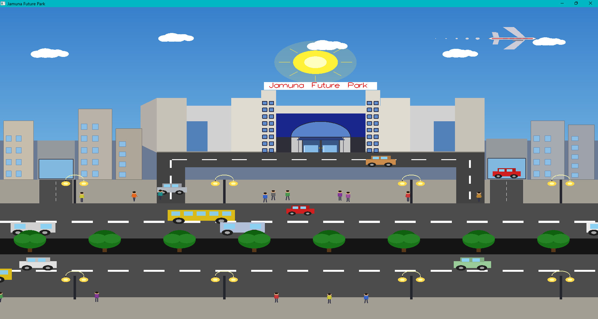
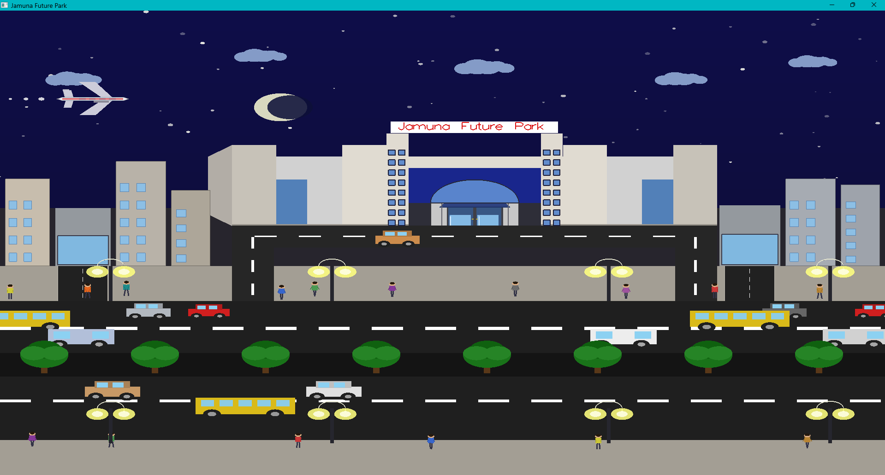

I made moving scenes of Jamuna future park front side in this project using computer graphics knowledge. I made day scene and night scene of Jamuna future park. I used C++ programming language and OpenGL library to make this project. I used different shapes, colors, and textures to make the scenes more realistic. I also added some animations to make the scenes more lively. I learned a lot about computer graphics and OpenGL while making this project. It was a great experience for me.